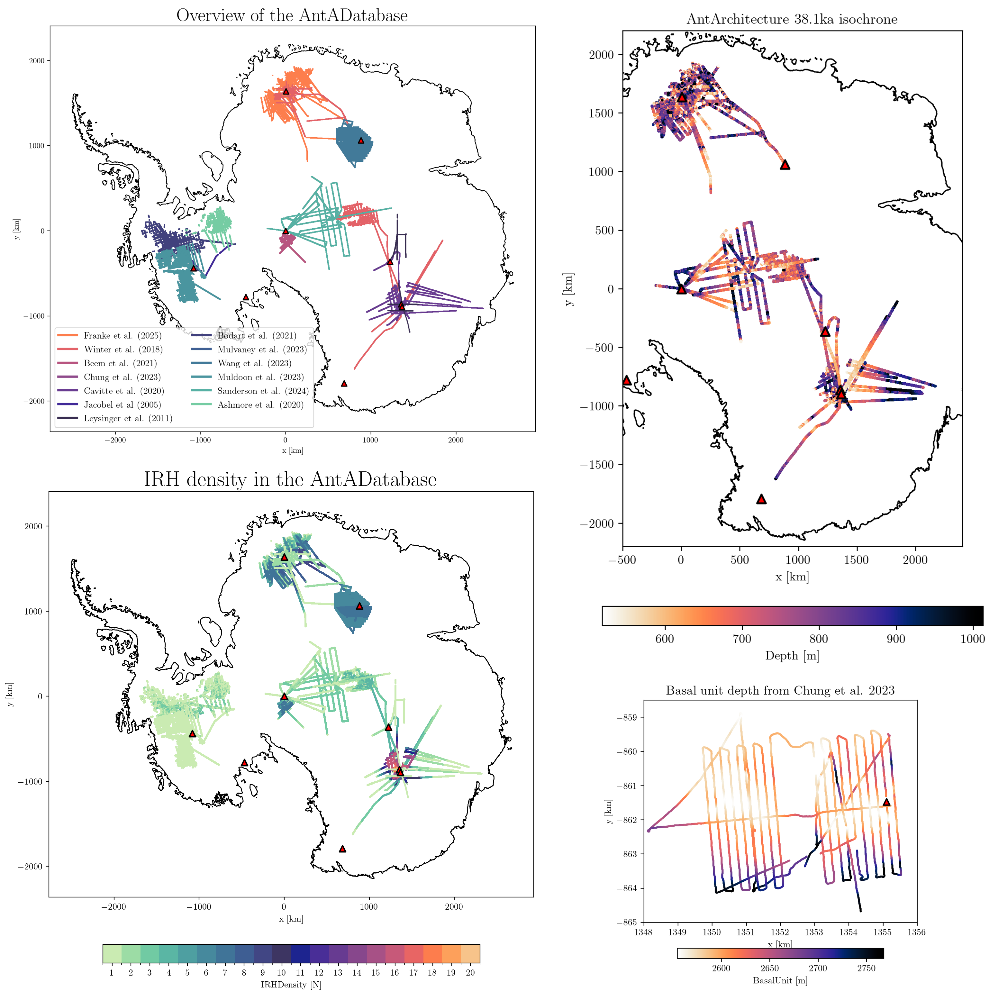

AntADatabase#
AntADatabase a Python-powered SQLite database designed for browsing, visualizing and processing Internal Reflecting Horizons (isochrones) across Antarctica, curated by the AntArchitecture action group. It is specifically designed for ice dynamic modelers who need a fast, memory-efficient data structure to constrain their models.
Overview#
 Figures created using plotting functions from this module
Datasets currently included:#
Ashmore et al. 2020, https://doi.org/10.1029/2019GL086663
BEDMAP1: Lythe et al. (2022), https://doi.org/10.5285/f64815ec-4077-4432-9f55-0ce230f46029
BEDMAP2: Fretwell et al. (2022), https://doi.org/10.5285/2fd95199-365e-4da1-ae26-3b6d48b3e6ac
BEDMAP3: Frémand et al. (2022), https://doi.org/10.5285/91523ff9-d621-46b3-87f7-ffb6efcd1847
Beem et al. 2021, https://doi.org/10.15784/601437
Bodart et al. 2021, https://doi.org/10.5285/F2DE31AF-9F83-44F8-9584-F0190A2CC3EB
Bodart and Sutter 2025a, https://doi.org/10.5281/zenodo.17348976
Bodart and Sutter 2025b, https://doi.org/10.5281/zenodo.17348094
Cavitte et al. 2020, https://doi.org/10.15784/601411
Chung et al. 2023 https://doi.pangaea.de/10.1594/PANGAEA.957176
Franke et al. 2025, https://doi.org/10.1594/PANGAEA.973266
Jacobel and Welch 2005, https://doi.org/10.7265/N5R20Z9T
Leysinger-Vieli et al. 2011, https://doi.org/10.5281/zenodo.15516203
Muldoon et al. 2023, https://doi.org/10.15784/601673
Mulvaney et al. 2023, https://doi.pangaea.de/10.1594/PANGAEA.963470
Sanderson et al. 2024, https://doi.org/10.5285/cfafb639-991a-422f-9caa-7793c195d316
Siegert and Payne 2024, https://onlinelibrary.wiley.com/doi/10.1002/esp.1238
Wang et al. 2023, https://doi.org/10.1594/PANGAEA.958462
Winter et al. 2018, https://doi.org/10.1594/PANGAEA.895528
Yan et al. 2025, https://doi.org/10.5281/zenodo.14962526
Key Features#
Standardized HDF5 format
SQLite indexing
Quick visualization on Antarctica map
Generate lazy data for later use
Acknowledgments#
I am developing this tool as part of my PhD project, which is funded by the Swiss National Science Foundation (grant no. 211542, Project CHARIBDIS) Any data used through this database should be cited at source. For this, use the DOI provided in the metadata. If you used this tool for your work and this was useful, please cite this module, so other people get to know that it exists.
Tutorial#
To get started with this module and get an overview of the features and capabilities, visit: